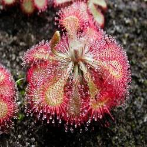
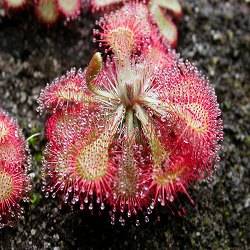

O que sao Plantas Carnivoras?
As plantas carnívoras ou insectívoras mexem com a imaginação de muitas pessoas. Muitos acreditam que essas plantas são agressivas e que atacam suas presas, entretanto, isso não é uma realidade, sendo a maioria, inclusive, de porte muito pequeno e bastante delicada. Estima-se que existam cerca de 600 espécies de plantas carnívoras no mundo. A maior ocorrência é em regiões tropicais e subtropicais. Essas espécies estão divididas em seis famílias, e duas são encontradas no Brasil.
As plantas carnívoras vivem em locais onde o solo apresenta poucos nutrientes, principalmente fosfato e nitratos. Em virtude dessa deficiência, as plantas que ali vivem apresentam importantes mecanismos que auxiliam na complementação nutricional. As plantas carnívoras, portanto, “capturam” pequenos seres vivos para complementar os nutrientes de que elas necessitam.
Quando falamos que as plantas carnívoras capturam seres vivos, é fundamental destacar que elas não fazem uma captura ativa. Na realidade, elas possuem mecanismos que prendem o organismo, como se preparassem verdadeiras armadilhas. Essas plantas atraem, prendem e digerem suas presas para retirar delas os nutrientes
Agora vamos conhecer três tipos de plantas carnivoras ambas separadas por sua peculiaridade e sua maneira de atrair e capturar pequenos animais. A seguir veremos sobre as seguintes plantas carnivoras: Dionaea Muscipula, Drosera e Sarracenia.
DIONAEA MUSCIPULA
A dionéia é uma planta herbácea carnívora nativa dos pântanos do sudeste dos Estados Unidos, nos estados da Carolina do Norte e do Sul. Ela é uma das pouquíssimas espécies de plantas capazes de realizar movimentos, juntamente com a drosera e a dormideira. É uma planta bem pequena, com no máximo 10 cm de altura e cerca de 4 a 8 folhas dispostas em roseta. Suas folhas são muito particulares, compostas de pecíolo e uma armadilha, divida em dois lóbulos, como uma mandíbula com 15 a 20 longos “dentes” nas bordas. O pecíolo é achatado, verde e além de sustentar a mandíbula tem função fotossíntética.
A superfície interna da armadilha, apresenta coloração vermelha e secreta néctar para atrair os insetos, nela também há importantes pêlos sensitivos. Estes pêlos tem a função de detectar a presença do inseto para que em uma fração de segundos a armadilha se feche e o inseto prisioneiro possa ser digerido lentamente. Pelo menos dois pêlos sensitivos devem ser acionados sucessivamente em um curto espaço de tempo para que a armadilha funcione. Este mecanismo evita que uma simples gota de chuva faça a armadilha se fechar em vão.
Após o fechamento da armadilha, são secretados em seu interior enzimas digestivas, produzidas por glândulas especiais. Após a digestão a armadilha lentamente torna a abrir, mostrando alguns restos do banquete, geralmente os exoesqueletos de quitina. A digestão dura cerca de 10 dias. Este processo pode acontecer cerca de 3 vezes com cada armadilha e após este processo elas são substituídas por novas folhas. A floração ocorre na primavera e revela pequenas e delicadas flores pêntameras de cor branca que dão origem a sementes pretas e brilhantes, em forma de gota.
Deve ser cultivada sob sol pleno ou meia-sombra, em substrato preparado a base de musgo esfagno, turfa e perlita, levemente ácido e mantido constantemente úmido. As dionéias não devem ser plantadas em terra e nem necessitam adubação, que pode facilmente intoxicá-las. Jamais alimente-as com pedacinhos de carne ou insetos mortos, deixe que ela mesmo consiga suas presas.
DROSERA
Droseras possuem folhas cobertas por pêlos que produzem uma substância pegajosa, a mucilagem. Ao pousar na folha da planta, o animal fica colado a essas gotas. Quanto mais ele se debate para escapar, mais grudado ele fica. Depois da captura, a planta começa a produzir enzimas digestivas que tratarão de digerir o inseto ou pequeno animal.
As folhas modificadas apresentam essas emergências glandulares (chamadas de tentáculos por alguns autores) que exsudam a mucilagem junto com componentes para a atração (néctar), captura (polissacarídeos) e digestão (enzimas) de insetos.
 

Dependendo da espécie, vão bem desde o sol pleno a sombra. Seu solo deve ser como o solo em seu habitat natural: ácido e quase sem nutrientes, retentor de umidade, mas bem drenado. O substrato pode ser uma mistura de 5 partes de musgo e 1 de areia grossa. As regas devem ser regulares, mantendo o solo úmido, mas não encharcado. O ideal é deixar um pratinho com água, debaixo do vaso.
SARRACENIA
Sarracenia Leucophylla é um género botânico pertencente à família Sarraceniaceae. As plantas deste Gênero, são carnívoras e/ou insetívoras, pois na grande parte das vezes alimentam-se de insetos. A mesma é natural da parte norte dos EUA e Canadá.
A maioria das Sarracenias crescem de um rizoma subterrâneo, com muitas folhas tubulares em forma de jarro irradiando do ponto de crescimento e virado para cima. No entanto duas espécies, Serracenia purpúrea e Sarracenia psittacina nascem horizontalmente rentes ao solo.
Folhas com 10-30 cm de comprimento, verdes, amarelas ou avermelhadas com nervuras roxas. A superfície interna do ápice do jarro é coberta com pêlos apontando para baixo. Algumas Sarracenias também produzem folhas planas e não carnívoras durante o outono, chamadas de filodia; estas costumam durar todo o inverno. Inflorescência acima da folhagem, com uma única flor, que dependendo da espécie têm de 3-10 cm de diâmetro. Surgem no início da primavera. As flores de quase todas as espécies são perfumadas. O cheiro varia, mas geralmente é forte e às vezes desagradável. S. flava tem um odor especialmente forte, semelhante a urina de gato.
A maioria das sarracenias tem jarras altas e estreitas que atraem insetos com cores brilhantes e cheiros convidativos. Os visitantes são forçados a posições perigosas por superfícies cerosas ou enganados por folhas transparentes, enquanto o néctar misturado com veneno os intoxica. Aqueles que escorregam e caem no jarro são presos por fios de cabelo apontando para baixo e rapidamente digeridos pelas próprias enzimas da planta.
Sarracenias Devem ser cultivadas em sol pleno com água em abundancia. Em Seu habitat ela fica em brejos aberto recebendo muita água e sol. Algumas especies as vezes são encontradas flutuando com apenas uma fina camada de musgo que é usada como base. São plantas que devem estar ao ar livre jamais colocadas em ambientes fechados ou com muita sombra pois pode fungar com facilidade.